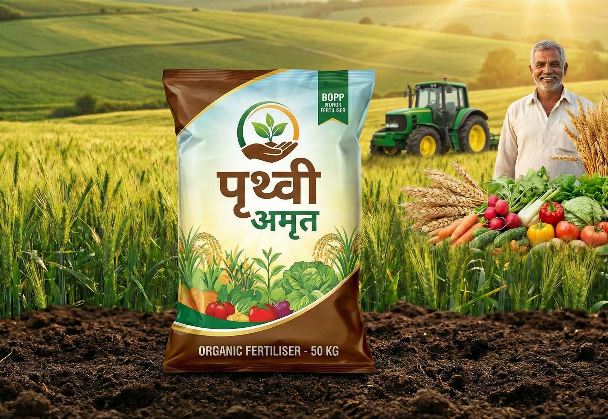

Fertilizer Bags Manufacturer in Morbi, Gujarat

Mega Polybag is a trusted manufacturer of high-quality PP woven Fertilizer Bags
designed to protect fertilizers from moisture, contamination, and damage during transportation
and storage. Our bags are widely used by fertilizer manufacturers, distributors, and agro industries
across India.
Why Fertilizer Bags Are Important?
Fertilizers are sensitive to moisture and environmental conditions.
Proper packaging ensures product quality, safety, and easy handling.
Our PP woven fertilizer bags provide excellent protection and durability.
- ✔ Prevents moisture absorption
- ✔ Maintains fertilizer quality
- ✔ Easy stacking and transportation
- ✔ Reduces product wastage
- ✔ Cost-effective industrial packaging
Material & Specifications
- Material: 100% Virgin Polypropylene (PP)
- Optional LDPE liner for moisture protection
- Weight capacity: 25kg / 50kg
- Custom sizes available
- High tensile strength & tear resistance
- Multi-color & logo printing available
Applications of Fertilizer Bags
- ✔ Chemical Fertilizers
- ✔ Organic Fertilizers
- ✔ Bio-fertilizers
- ✔ Agricultural Nutrients
- ✔ Agro-based Industries
Why Choose Mega Polybag?
- ✔ Manufacturing unit in Morbi, Gujarat
- ✔ Strict quality control
- ✔ Competitive factory pricing
- ✔ Timely delivery across India
- ✔ Custom branding & bulk supply
Frequently Asked Questions
Do you provide LDPE liner inside fertilizer bags?
Yes, we offer LDPE liner options to protect fertilizers from moisture.
Can you customize bag size and printing?
Yes, we provide full customization including size, color, and logo printing.
What is your minimum order quantity?
MOQ depends on bag specifications. Contact us for details.